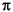
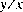
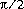
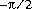
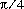
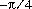
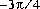
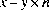
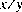
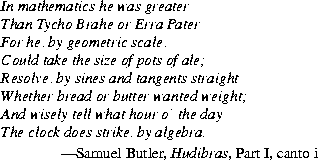

then n is the integer that is even. If the remainder is zero, its sign is the same as the
sign of the first argument.
then n is the integer that is even. If the remainder is zero, its sign is the same as the
sign of the first argument.
java.lang.MathMath contains useful basic numerical constants and methods.
public final classTo ensure portability of Java programs, the specifications of many of the numerical functions in this package require that they produce the same results as certain published algorithms. These algorithms are available from the well-known network libraryMath{ public static final doubleE= 2.7182818284590452354; public static final doublePI= 3.14159265358979323846; public static doublesin(double a); public static doublecos(double a); public static doubletan(double a); public static doubleasin(double a); public static doubleacos(double a); public static doubleatan(double a); public static doubleatan2(double a, double b); public static doubleexp(double a); public static doublelog(double a); public static doublesqrt(double a); public static doublepow(double a, double b); public static doubleIEEEremainder(double f1, double f2); public static doubleceil(double a); public static doublefloor(double a); public static doublerint(double a); public static intround(float a); public static longround(double a); public static doublerandom(); public static intabs(int a); public static longabs(long a); public static floatabs(float a); public static doubleabs(double a); public static intmin(int a, int b); public static longmin(long a, long b); public static floatmin(float a, float b); public static doublemin(double a, double b); public static intmax(int a, int b); public static longmax(long a, long b); public static floatmax(float a, float b); public static doublemax(double a, double b); }
netlib as the package fdlibm ("Freely Distributable Math Library"). These algorithms, which are written in the C programming language, are to be understood as if executed in Java execution order with all floating-point operations following the rules of Java floating-point arithmetic.
The network library may be found at http://netlib.att.com on the World Wide Web; then perform a keyword search for fdlibm. The library may also be retrieved by E-mail; to begin the process, send a message containing the line:
send index from fdlibmto
netlib@research.att.com. The Java math library is defined with respect to
the version of fdlibm dated 95/01/04. Where fdlibm provides more than one definition
for a function (such as acos), the "IEEE754 core function" version is to be
used (residing in a file whose name begins with the letter e).
A complete and self-contained description of the algorithms to be used for these functions will be provided in a future version of this specification. It is also anticipated that the algorithms will be coded in Java to provide a reference implementation that is not tied to fdlibm.
20.11.1 public static final double
E = 2.7182818284590452354;
The constant value of this field is the double value that is closer than any other
to e, the base of the natural logarithms.
20.11.2 public static final double
PI = 3.14159265358979323846;
The constant value of this field is the double value that is closer than any other
to , the ratio of the circumference of a circle to its diameter.
20.11.3 public static double
sin(double a)
This method computes an approximation to the sine of the argument, using the
sin algorithm as published in fdlibm (see the introduction to this section).
20.11.4 public static double
cos(double a)
This method computes an approximation to the cosine of the argument, using the
cos algorithm as published in fdlibm (see the introduction to this section).
20.11.5 public static double
tan(double a)
This method computes an approximation to the tangent of the argument, using the
tan algorithm as published in fdlibm (see the introduction to this section).
20.11.6 public static double
asin(double a)
This method computes an approximation to the arc sine of the argument, using the
asin algorithm as published in fdlibm (see the introduction to this section).
20.11.7 public static double
acos(double a)
This method computes an approximation to the arc cosine of the argument, using
the acos algorithm as published in fdlibm (see the introduction to this section).
20.11.8 public static double
atan(double a)
This method computes an approximation to the arc tangent of the argument, using
the atan algorithm as published in fdlibm (see the introduction to this section).
20.11.9 public static double
atan2(double y, double x)
This method computes an approximation to the arc tangent of the quotient  of
the arguments, using the atan2 algorithm as published in fdlibm (see the introduction
to this section).
double value closest to .
double value closest to .
double value closest to .
double value closest to .
double value closest to .
double value closest to .
double value closest to .
double value closest to .
20.11.10 public static double
exp(double a)
This method computes an approximation to the exponential function of the argument
(e raised to the power of the argument, where e is the base of the natural logarithms
(§20.11.1)), using the exp algorithm as published in fdlibm (see the
introduction to this section).
20.11.11 public static double
log(double a)
This method computes an approximation to the natural logarithm of the argument,
using the log algorithm as published in fdlibm (see the introduction to this section).
20.11.12 public static double
sqrt(double a)
This method computes an approximation to the square root of the argument.
double value closest to the true mathematical square
root of the argument value.
20.11.13 public static double
pow(double a, double b)
This method computes an approximation to the mathematical operation of raising
the first argument to the power of the second argument, using the pow algorithm as
published in fdlibm (see the introduction to this section).
1.0.
1.0, then the result is the same as the first argument.
double value.
ceil (§20.11.15) or, which is the
same thing, a fixed point of the method floor (§20.11.16). A value is a fixed
point of a one-argument method if and only if the result of applying the method to
the value is equal to the value.)
20.11.14 public static double
IEEEremainder(double x, double y)
This method computes the remainder operation on two arguments as prescribed
by the IEEE 754 standard: the remainder value is mathematically equal to
 where is the mathematical integer closest to the exact mathematical
value of the quotient ; if two mathematical integers are equally close to
then n is the integer that is even. If the remainder is zero, its sign is the same as the
sign of the first argument.
20.11.15 public static double
ceil(double a)
The result is the smallest (closest to negative infinity) double value that is not less
than the argument and is equal to a mathematical integer.
-1.0, then the result is negative zero.
Math.ceil(x) is exactly the value of -Math.floor(-x).
20.11.16 public static double
floor(double a)
The result is the largest (closest to positive infinity) double value that is not
greater than the argument and is equal to a mathematical integer.
20.11.17 public static double
rint(double a)
The result is the double value that is closest in value to the argument and is equal
to a mathematical integer. If two double values that are mathematical integers are
equally close to the value of the argument, the result is the integer value that is
even.
20.11.18 public static int
round(float a)
The result is rounded to an integer by adding , taking the floor of the result,
and casting the result to type int.
In other words, the result is equal to the value of the expression:
(int)Math.floor(a + 0.5f)Special cases:
0.
Integer.MIN_VALUE (§20.7.1), the result is equal to the value of Integer.MIN_VALUE.
Integer.MAX_VALUE (§20.7.2), the result is equal to the value of Integer.MAX_VALUE.
20.11.19 public static long
round(double a)
The result is rounded to an integer by adding , taking the floor of the result,
and casting the result to type long.
In other words, the result is equal to the value of the expression:
(long)Math.floor(a + 0.5d)Special cases:
0.
Long.MIN_VALUE (§20.7.1), the result is equal to the value of Long.MIN_VALUE.
Long.MAX_VALUE (§20.7.2), the result is equal to the value of Long.MAX_VALUE.
20.11.20 public static double
random()
The result is a double value with positive sign, greater than or equal to zero but
less than 1.0, chosen pseudorandomly with (approximately) uniform distribution
from that range.
When this method is first called, it creates a single new pseudorandom-number generator, exactly as if by the expression
new java.util.Random()This new pseudorandom-number generator is used thereafter for all calls to this method and is used nowhere else.
This method is properly synchronized to allow correct use by more than one thread. However, if many threads need to generate pseudorandom numbers at a great rate, it may reduce contention for each thread to have its own pseudorandom number generator.
20.11.21 public static int
abs(int a)
The result is the absolute value of the argument, if possible.
If the argument is not negative, the argument is returned.
If the argument is negative, the negation of the argument is returned. Note that if the argument is equal to the value of Integer.MIN_VALUE (§20.7.1), the most negative representable int value, the result will be that same negative value.
20.11.22 public static long
abs(long a)
The result is the absolute value of the argument, if possible.
If the argument is not negative, the argument is returned.
If the argument is negative, the negation of the argument is returned. Note that if the argument is equal to the value of Long.MIN_VALUE (§20.8.1), the most negative representable long value, the result will be that same negative value.
20.11.23 public static float
abs(float a)
The argument is returned with its sign changed to be positive.
Float.intBitsToFloat(0x7fffffff & Float.floatToIntBits(a))[This specification for the method
abs is scheduled for introduction in Java version 1.1. In previous versions of Java, abs(-0.0f) returns -0.0f, which is not correct.]20.11.24 public static double
abs(double a)
The argument is returned with its sign changed to be positive.
Double.longBitsToDouble((Double.doubleToLongBits(a)<<1)>>>1)[This specification for the method
abs is scheduled for introduction in Java version 1.1. In previous versions of Java, abs(-0.0d) returns -0.0d, which is not correct.]20.11.25 public static int
min(int a, int b)
The result is the smaller of the two arguments-that is, the one closer to the value
of Integer.MIN_VALUE (§20.7.1). If the arguments have the same value, the
result is that same value.
20.11.26 public static long
min(long a, long b)
The result is the smaller of the two arguments-that is, the one closer to the value
of Long.MIN_VALUE (§20.8.1). If the arguments have the same value, the result is
that same value.
20.11.27 public static float
min(float a, float b)
The result is the smaller of the two arguments-that is, the one closer to negative infinity. If the arguments have the same value, the result is that same value.
min is scheduled for introduction in Java version 1.1. In previous versions of Java, min(0.0f, -0.0f) returns 0.0f, which is not correct.]20.11.28 public static double
min(double a, double b)
The result is the smaller of the two arguments-that is, the one closer to negative infinity. If the arguments have the same value, the result is that same value.
min is scheduled for introduction in Java version 1.1. In previous versions of Java, min(0.0d, -0.0d) returns 0.0d, which is not correct.]20.11.29 public static int
max(int a, int b)
The result is the larger of the two arguments-that is, the one closer to the value of
Integer.MAX_VALUE (§20.7.2). If the arguments have the same value, the result
is that same value.
20.11.30 public static long
max(long a, long b)
The result is the larger of the two arguments-that is, the one closer to the value of
Long.MAX_VALUE (§20.8.2). If the arguments have the same value, the result is
that same value.
20.11.31 public static float
max(float a, float b)
The result is the larger of the two arguments-that is, the one closer to positive infinity. If the arguments have the same value, the result is that same value.
max is scheduled for introduction in Java version 1.1. In previous versions of Java, max(-0.0f, 0.0f) returns -0.0f, which is not correct.]20.11.32 public static double
max(double a, double b)
The result is the larger of the two arguments-that is, the one closer to positive infinity. If the arguments have the same value, the result is that same value.
max is scheduled for introduction in Java version 1.1. In previous versions of Java, max(-0.0d, 0.0d) returns -0.0d, which is not correct.].
Contents | Prev | Next | Index
Java Language Specification (HTML generated by Suzette Pelouch on February 24, 1998)
Copyright © 1996 Sun Microsystems, Inc.
All rights reserved
Please send any comments or corrections to doug.kramer@sun.com